4.20 Visual study of weak interactions¶
Multiwfn manual, p.873–912. Images:
../imgs/.
By comparing the graph and content of LMOdip.txt, you can find LMO1 and LMO2, which respectively correspond to core orbitals of N5 and C1, have negligible polarity (i.e. the “norm” are basically zero), reflecting that the LMO centers are very close to the nuclear positions. The LMO9 corresponds to lone pair orbital of N5, its “norm” is as high as 1.35 a.u., showing that the LMO center deviates from N5 nucleus significantly. LMOs 3 and 5 correspond to the N-H bonds, LMOs 4, 7 and 8 correspond to the C-H bonds, it is well known that polarity of C-H should be lower than N-H, this point is well reflected by the difference in their “Norm” values. The “Norm” of LMO6, which corresponds to the C-N bond, is 0.3089, well indicating the fact that C-N is a polar bond.
In addition, in current system the Y coordinates of N5 and C1 are -1.438 and 1.330 Bohr, respectively. The Y component of the bond dipole moment of LMO6 is 0.253, which is an evident positive value. This observation shows that the negative and positive charge centers are on the N5 and C1 sites, respectively, corresponding to the fact that nitrogen has larger electronegativity than carbon.
4.20 Visual study of weak interactions¶
4.20.1 Studying weak interaction in 2-pyridoxine 2-aminopyridine by NCI method¶
Please carefully read Section 3.23.1 first to understand theory and how to use Multiwfn to carry out NCI analysis. Besides, book chapter DOI: 10.1016/B978-0-12-821978-2.00076-3 and Angew. Chem. Int. Ed., 137, e202504895 (2025) DOI: 10.1002/anie.202504895 provided very detailed introductions of NCI.
Weak interaction character in 2-pyridoxine 2-aminopyridine system has already been studied using AIM theory in Section 4.2.1, in this section we also perform NCI analysis for it, and meantime I will show how to plot color-filled RDG map and AIM topology graph as a single map.
Boot up Multiwfn and input examples\2-pyridoxine_2-aminopyridine.wfn
Multiwfn session
- 20 — Visual study of weak interaction
- 1 — NCI analysis
- 2 — Medium-quality grid After a while, calculation of grid data is finished. You can then select -1 to visualize scatter map, from which interactions in the system can be examined preliminarily.
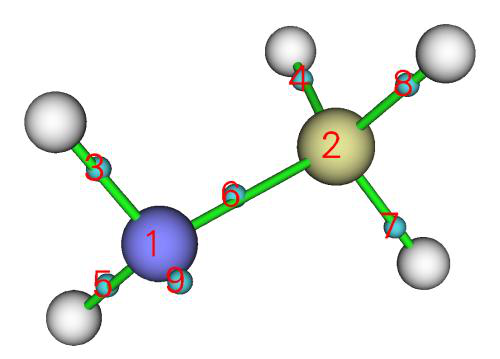
Since there are spikes (points nearly approaching bottom) at very negative region of sign(λ2)ρ, according to the description of NCI method given in Section 3.23.1, we immediately know that this dimer system must contain evident attractive intermolecular interaction. There is also a spike at very positive side, therefore steric effects should exist in present system.
Then select option 3 to export func1.cub and func2.cub, and use VMD to plot a color-filled RDG map using the method described in Section 3.23.1, we obtain the graph below
The type of interactions in this system now is very clear. Steric effect exists within the aromatic ring
Showing AIM information in colored RDG map Below I illustrate how to plot AIM critical points (CPs) and bond paths on the color-filled RDG map, the resulting graph will be more informative, since the trace of interactions can be vividly shown, while this kind of information is not explicitly revealed by NCI analysis.
Return to main menu and input below commands to search CPs, generate paths and then export
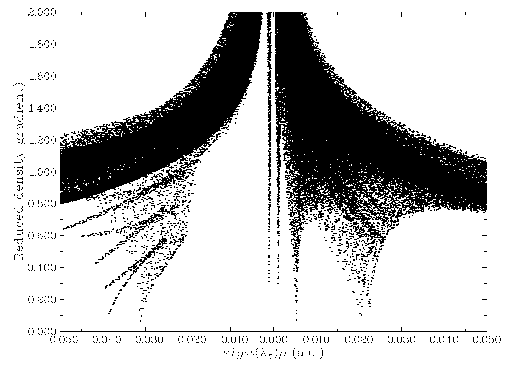
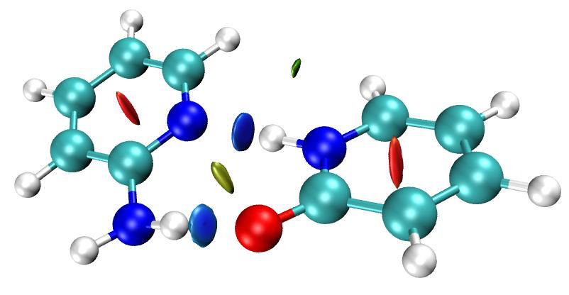
them as CPs.pdb and paths.pdb in current folder, respectively.
Multiwfn session
- 2 — Topology analysis
- 2 — Search nuclear CPs
- 3 — Search bond CPs
- 8 — Generate bond path
- -4 — Modify or export CPs
- 6 — Export CPs as CPs.pdb in current folder
- 0 — Return -5
- Modify or print detail or export paths 6 — Export paths as paths.pdb in current folder Then we close Multiwfn. Drag CPs.pdb and paths.pdb into VMD main window in turn to load them, select "Graphics"-"Representation", change "Selected molecules" to the second term (corresponding to CPs.pdb), change "Drawing Method" to "VDW" and set "Sphere Scale" from the default 1.0 to the minimal value 0.1. Note that in the CPs.pdb file, C, N, O, F atoms correspond to (3,-3), (3,-1), (3,+1), (3,+3), respectively. Here we only want to draw bond CPs (i.e. (3,-1) type of CPs) on the graph with yellow color, therefore we input "nitrogen" in "Selected Atoms" text box and press ENTER button, then change "Coloring Method" to "Color ID" and select "4 yellow" in the drop-down box. Currently, the graph looks like below
Probably you feel that the spheres corresponding to CPs are too large, however we cannot further decrease the "Sphere Scale" using graphical window due to limitation of VMD. To make the spheres smaller, you have to use corresponding command in VMD console window. To find proper command to do this, we select "File"-"Log Tcl Commands to Console", then change "Sphere Scale" to other value (e.g. 0.2), you will immediately see corresponding text-line command in the VMD console window, for present the command is mol modstyle 0 1 VDW 0.200000 12.000000, where the argument 0.2 corresponds to size of the spheres. Therefore, to decrease the sphere size to e.g. 0.09, we should input mol modstyle 0 1 VDW 0.09 12.000000 in the console window, then in the VMD graphical window you will see the spheres have already become smaller.
Next, we change the appearance of paths. In the "Graphics"-"Representation" panel, select the third term in "Selected molecules" (corresponding to paths.pdb), change the drawing method to "VDW", set coloring method as "Color ID" and select "3 orange", then use abovementioned skill to set the sphere scale to 0.02. The final graph is shown below.
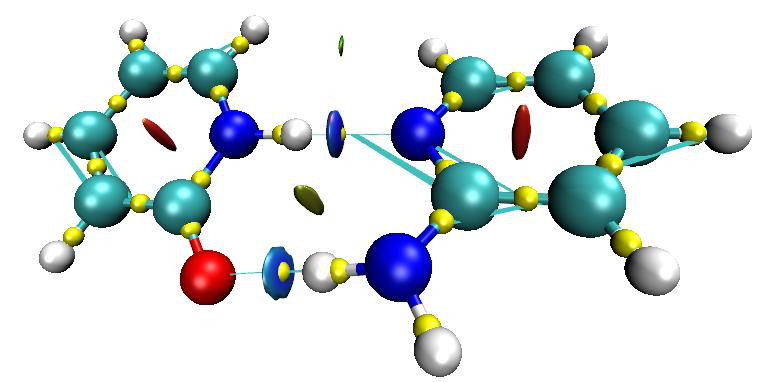
From this graph, not only the weak interaction regions are clearly revealed, but also the interaction paths are vividly exhibited. Notice that there is no CP and path corresponding to the hydrogen-hydrogen interaction, because in this region there is no position having vanishing electron density gradient, and this is why in the scatter map the spike corresponding this H-H interaction does not completely approach the bottom of the map. This observation reflects an advantage of NCI analysis over AIM analysis, namely interaction can be revealed even if there is no corresponding bond CP.
The steps of showing the CPs and bond paths in VMD are somewhat lengthy, therefore I strongly recommend using VMD plotting scripts to automatically do all of above steps, please follow part 4 of this video tutorial: https://youtu.be/e4FpVc9ao48, you will find the process is extremely easy. More information about this script can be found in Section 4.2.5.
4.20.2 Studying weak interaction in DNA by NCI method based on promolecular density¶
Please read Sections 3.23.1 and 3.23.2 if you are not familiar with NCI analysis and the concept of promolecular approximation. In this example, we will carry out NCI analysis for a DNA fragment consisting of 10 base pairs. Since this system is fairly large, promolecular approximation is used for approximately rapid construction of the molecular electron density. This example is also illustrated as part 3 of this video tutorial: https://youtu.be/e4FpVc9ao48.
Here we only study weak interaction character of a local DNA region, which is enclosed in the transparent box:
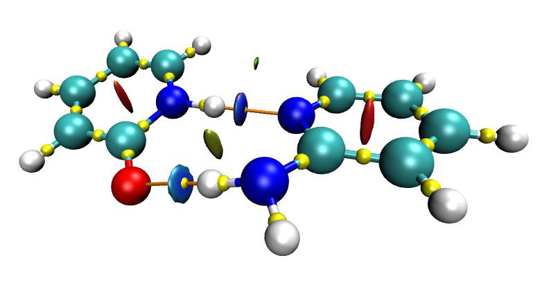
Boot up Multiwfn and input: examples\DNA.pdb
Multiwfn session
- 20 — Visual study of weak interaction
- 2 — NCI analysis based on promolecular density
- 7 — Use mode 7 for defining grid data
- 84,565 — Use midpoint of atom 84 and 565 as center of grid data. You can view molecule structure in your favourite visualization tool to find two proper atoms used to define center
120,120,120 // Because the spatial scope of grid data is large, we need relatively large number of grid points, otherwise the grid spacing will be too large, which results in bad quality of RDG isosurfaces
9,9,9 // Set the extension distances in all directions to 9 Bohr Hint: You can also use mode 10 to set up box interactively in a GUI window, the box size and position of box center is more controllable
After the calculation of grid data is finished, choose option 3 to export sign(λ2)ρ and RDG as func1.cub and func2.cub respectively in current folder, and then copy them as well as examples\RDGfill_pro.vmd to VMD installation folder. Boot up VMD and input source RDGfill_pro.vmd in console window to draw color-filled RDG isosurface map, the resulting graph after some adjustments is shown below. (For better visualization effect, open "graphics"-"Representation" and change the drawing method of DNA to Licorice, change bond radius to 0.2. Then enter “Display”-“Display settings...” to set “Cue Mode” to "Linear" and set “Cue Start/End” to 2.25 and 3.75, respectively, so that distant atoms can be substantially screened). Finally, you will get the graph below
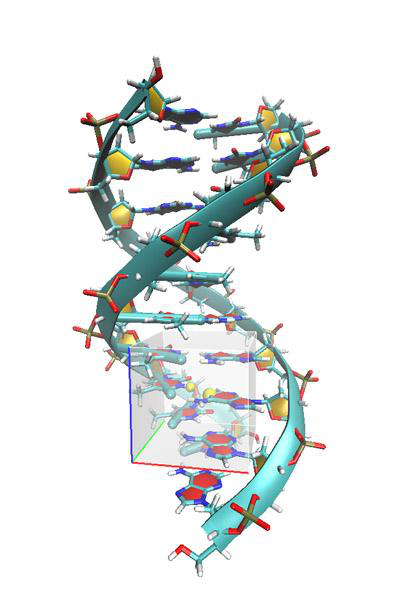
It is clear that there are \(\pi-\pi\) stacking interactions between neighbouring base pairs (big flat isosurfaces), and there are two strong hydrogen bonds among each base-pairs. The region pointed by red arrow seems to be hydrogen bond because it connects hydrogen and oxygen, however since the filled-color is green, we can conclude that it can only be regarded as vdW interaction.
The default isovalue 0.3 in RDGfill_pro.vmd is suitable for present case, but may not be suitable for exhibiting weak interaction region of other systems, in that situation you need to adjust it manually. You can either edit the .vmd file, or choose “Graphics”-“Representation” in VMD, then select the representation with style “Isosurface” and reset isovalue by inputting expected value in text box.
.
4.20.3 Visually studying weak interaction for water in bulk environment by aNCI method¶
Note 1: Using the aNCI method illustrates in this section is already deprecated, using amIGM method instead is significantly better, see Section 4.20.13 for illustration.
Note 2: Chinese version of this section is my blog article “Using Multiwfn to study weak interaction in molecular dynamics” (http://sobereva.com/186), which also contains extended discussion.
If you are unfamiliar with NCI and aNCI methods, please first read the introduction given in Sections 3.23.1, 3.23.2, 3.23.3, and book chapter DOI: 10.1016/B978-0-12-821978-2.00076-3, as well as Angew. Chem. Int. Ed., 137, e202504895 (2025) DOI: 10.1002/anie.202504895. The aNCI method illustrated in this section is a generalization of NCI analysis method for dynamic environment, e.g. molecular dynamics (MD) process.
In this example I will show how to use Multiwfn to visually study the weak interaction between
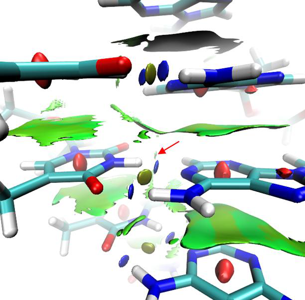
water molecules in the MD simulation of bulk water system. You can use any program to perform the MD simulation, as long as you know how to convert the resulting trajectory from private format to the general .xyz format, which can be recognized by Multiwfn and utilized in aNCI analysis.
Here I assume that you are a GROMACS 4.5 user. The detailed steps of the MD process are given below (very different to GROMACS >= 5.0), all of the related files can be found in examples\aNCI folder. If you do not want to perform the MD simulation yourself, you can directly download the wat.xyz, which will be utilized in aNCI analysis later: http://sobereva.com/multiwfn/extrafiles/aNCI_wat_xyz.zip.
Generating MD trajectory by GROMACS First, build a file named emptybox.gro, which records a blank box, and the side length in each direction is 2.5nm. Then run below command to fill the box with waters.
genbox -cp emptybox.gro -cs spc216.gro -o water.gro Run below command and select "GROMOS96 53a6 force field" to obtain the top file of the bulk water system. SPC/E water model is employed.
pdb2gmx -f water.gro -o water.gro -p water.top -water spce Then carry out NPT MD by 100ps to equilibrate the bulk water at 298.15 K, 1 atm environment. grompp -f pr.mdp -c water.gro -p water.top -o water-pr.tpr mdrun -v -deffnm water-pr Using VMD program to load water-pr.gro, select a water close to the center of the box. We select the water with resid index of 101, which is highlighted in the graph below. Note that the two hydrogens in this water have index of 302 and 303, and the index of the oxygen is 301.
This water will be freezed in the following MD simulation. In order to do so, we generate index file, namely inputting below commands
make_ndx -f water-pr.gro ri 101 q Run following command to do 1 ns equilibrium MD simulation at 298.15 K, the trajectory will
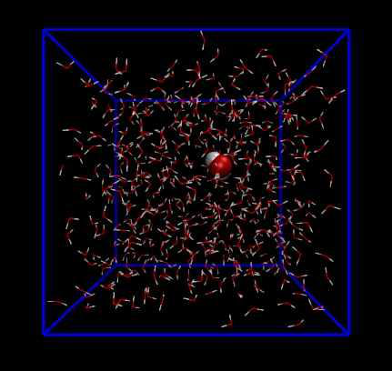
be saved every 1ps, and finally we will obtain 1000 frames. The water with resid index of 101 is freezed via the keyword "freezegrps = r_101". Note that NVT ensemble instead of NPT is used, because NPT process will scale the coordinate of the atoms, which somewhat destorys the effect of freezing.
grompp -f md.mdp -c water-pr.gro -p water.top -o water-md.tpr -n index.ndx mdrun -v -deffnm water-md Load the water-pr.gro into VMD, then load water-md.xtc to the same ID, select "File"-"Save Coordinate..." option and set the file type as xyz, then input all in the "Selected atoms" box, input 1 and 1000 in the "First" and "Last" window, respectively. Finally, click "Save" button to convert the GROMACS trajectory to wat.xyz.
IMPORTANT NOTICE: The wat.xyz currently records atom names rather than element names. For example, if you open this file via text editor, you will find each water contains OW, HW1 and HW2, which are atom names. However, in standard .xyz file, only atom elements should be recorded. Therefore, in general cases, you should manually replace all atom names in the .xyz file generated by VMD with element names. Fortunately, this step can be skipped in present example because there is no element in the periodic table named OW, HW1 and HW2, therefore, only the first letter of atom names will be employed by Multiwfn to try to identify their elements, and they can be properly recognized as oxygen and hydrogens, since after loading the .xyz file, you can find prompt “Formula: H1022 O511” on the screen, which is what we expected. If you find there are undesired elements in the “formula”, that means you have to replace the corresponding atom names in the .xyz file as their actual element names.
Generating grid data by Multiwfn Boot up Multiwfn and input following commands wat.xyz
Multiwfn session
- 20 — Visual study of weak interaction
- 3 — aNCI analysis
- 1,1000 — The range of the frames to be analyzed 7
- 301,301 — Using atom 301 (the oxygen of the frozen water) as the box center of the grid data
- 80,80,80 — The number of grid points on each side
- 4.5,4.5,4.5 — Extend 4.5 Bohr in each side Now Multiwfn starts to calculate electron density, its gradient and Hessian of each frame, then their average quantities will be obtained, and finally Multiwfn calculates average RDG and average
sign(λ2)ρ. The whole process is time-consuming; at a common Intel 4-cores computer about half an hour will be consumed. (Note that the electron density I referred to here is produced by promolecular approximation, which is constructed by simply superposing the density of the atoms in their free-states)
After the calculation is finished, you can select option 1 to check the scatter plot between
average RDG (X-axis) and average sign(λ2)ρ (Y-axis), see below, there is also option used to export the corresponding data points to plain text file.
Select option 6 to export the grid data of average RDG and average sign(λ2)ρ as avgRDG.cub and avgsl2r.cub in current folder, respectively.
Since we wish to check the stability of weak interaction, we also select 7 to export thermal fluctuation index to thermflu.cub in current folder. Note that this process requires recomputing electron density of each frame, and thus is time-consuming.
Analysis Copy avgRDG.cub, avgsl2r.cub, thermflu.cub as well as avgRDG.vmd and avgRDG_TFI.vmd in "examples\aNCI" folder to the directory of VMD program.
Simply boot up VMD and input source avgRDG.vmd in its console window, the average RDG
isosurface will be shown with isovalue of 0.25, meantime the average sign(λ2)ρ is mapped on the isosurface by various colors. In order to make the graph clearer, one should screen unrelated atoms, that is enter "Graphics" - "Representation"， then select the entry whose "style" is "CPK", and input serial 301 302 303 in the "Selected Atoms" box and then press ENTER button. Now only the water with resid index of 101 is presented in the graph. After proper rotation and translation of view, you will see
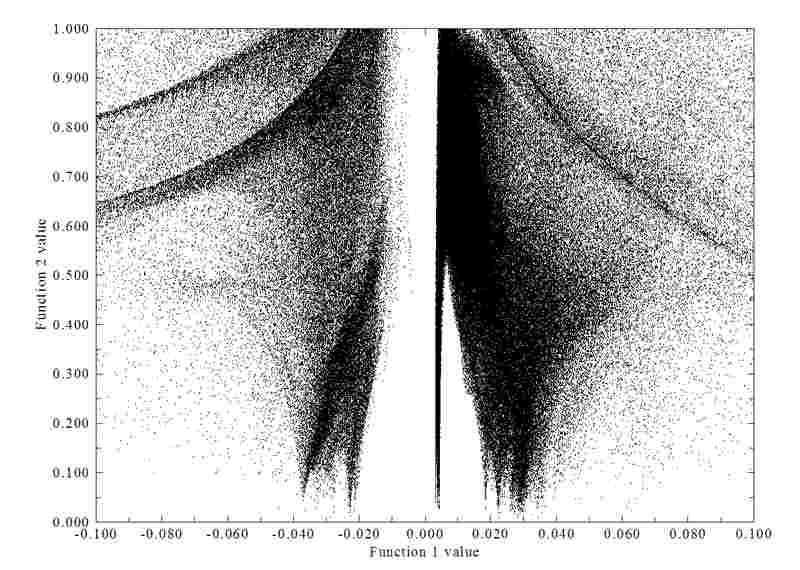
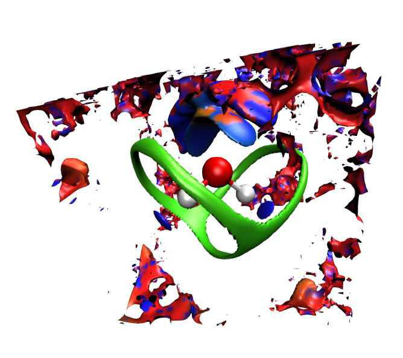
Unfortunately, around the water of interest, there are large amounts of noisy isosurfaces, which somewhat messed up the graph, thus it is better to shield them. This aim can be achieved by main function 13 of Multiwfn, the steps are described below.
Then boot up Multiwfn and input avgRDG.cub
Multiwfn session
- 13 — Process grid data
- 13 — Set the value of the grid points far away from specific atoms
- 1.5 — If the distance between a grid point and any selected atoms is longer than 1.5 times of vdW radius of corresponding atom, then the value of the grid point will be set as given value
Multiwfn session
- 100 — An arbitrarily large value (should be larger than the isovalue of the RDG isosurfaces)
- 2 — Inputting selected atoms by hand
- 301-303 — The indices of the atoms are 301, 302 and 303
- 0 — Export the updated grid data to a new cube file avgRDG.cub
The graph we obtained this time is very clear. The color scale is from -0.25 to 0.25, corresponding to the color variation of Blue-Green-Red. Bluer denotes electrostatic interaction or H-bond effect in corresponding region is stronger, and redder suggests more intensive steric effect. Green region implies low electron density, corresponding to vdW interaction. From the graph one can see that there are two blue ellipses near the two hydrogens, rendering that in the MD process, strong H-bonds are formed due to the O-H group. The slender green isosurface exhibits in which direction this water prefers to interact with other waters by vdW interaction. There is a big lump of isosurface above the oxygen, on which the red color appears in the middle part, while blue color occurs at the two ends; the latter reflects that the two lone pairs of the oxygen act as H-bond acceptors during the simulation, while the former reveals the repulsive interaction zone between waters.
Next, we study the stability of the weak interactions. First disable present isosurfaces, and then input the command source avgRDG_TFI.vmd in the console window, after some adjustments you
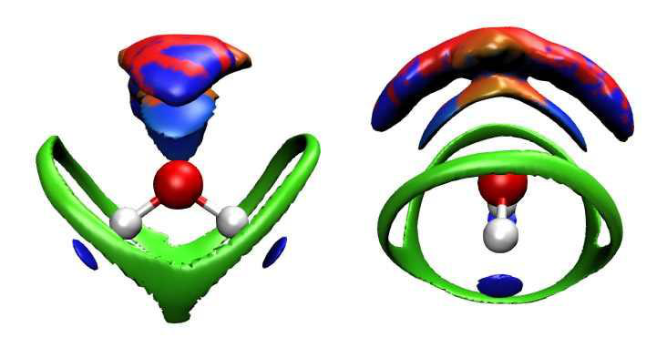
will see
The color scale is 0~1.5, still corresponding to the color transition of Blue-Green-Red. Bluer (red) means the thermal fluctuation index (TFI) is smaller (larger), and hence the weak interaction in corresponding region is more stable (unstable). The graph shows that it is stable that the water behaves as H-bond donor, while the stability of the water acting as H-bond acceptor is slightly weaker; the vdW interaction region is totally red, rendering that vdW interaction is evidently unstable compared to hydrogen bond.
Finally, it is worth to mention that using aNCI method you can plot a very nice picture to vividly reveal interaction between ligand and protein, as illustrated in the following map. The detailed steps of plotting this map have been described in this post: "Using Multiwfn to perform aNCI analysis to graphically study protein-ligand interactions in dynamic process" (http://sobereva.com/591, in Chinese). If you cannot fully understand this article via Google translator, please contact me, I will find time to translate it to English.
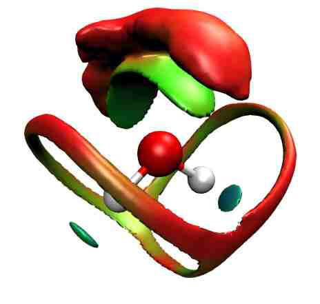
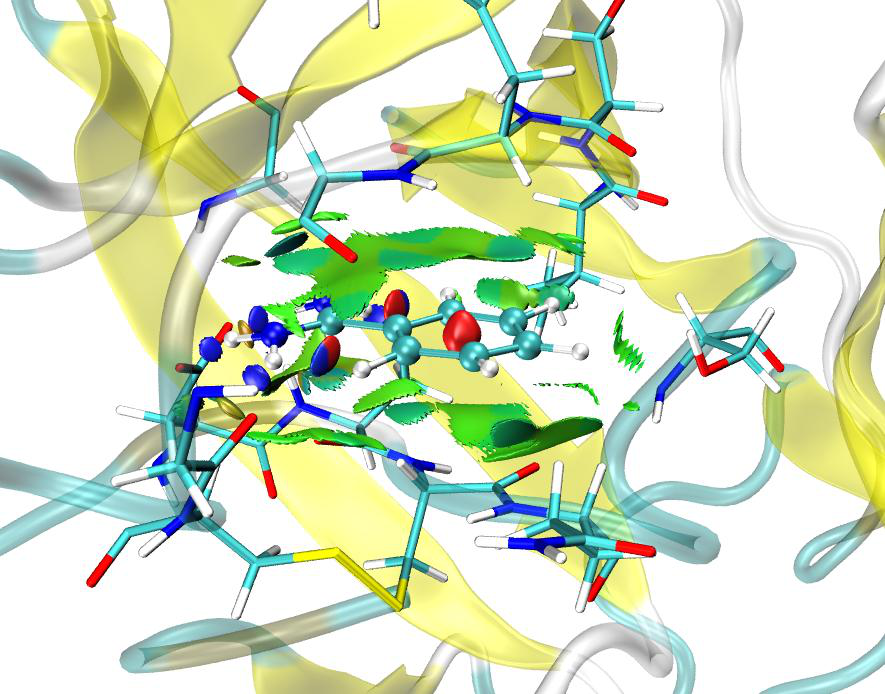
4.20.4 Revealing both chemical bonding and weak interaction regions in phenol dimer by IRI analysis¶
IRI (Interaction Region Indicator) was proposed by me in Chemistry−Methods, 1, 231 (2021). Before following this section, please read the original paper, Section 3.23.8 of this manual and DOI: 10.1016/B978-0-12-821978-2.00076-3 to gain basic knowledge about IRI first. Here I take two
examples to respectively show how to draw sign(λ2)ρ mapped IRI isosurfaces and IRI plane maps to simultaneously reveal both chemical bond and weak interaction regions.
In addition, Multiwfn can also perform topology analysis on IRI to study it quantitatively, see Section 4.2.11 for detail.
For more information on IRI analysis, please download the document "Tutorial of using Multiwfn to perform IRI analysis" and follow it: http://sobereva.com/multiwfn/res/IRI_tutorial.zip.
In this document the procedure of performing IRI-π analysis is also detailedly described. IRI-π is a variant of IRI aiming for vividly revealing π interactions.
It is highly suggested to read my this blog article: "Using IRI method to graphically study chemical bonds and weak interactions in chemical systems" (http://sobereva.com/598, in Chinese), in which the feature of IRI is carefully described, richer discussions are given, and more examples are provided.
Plotting sign(λ2)ρ mapped IRI isosurface Phenol dimer is taken as instance here. You will find almost all steps are identical to the NCI analysis described in Section 3.23.1.
Boot up Multiwfn and input examples\PhenolDimer.wfn
Multiwfn session
- 20 — Visual study of weak interaction
- 4 — IRI analysis
- 3 — High-quality grid
- 3 — Export cube file Move func1.cub, func2.cub and plotting script examples\IRIfill.vmd to VMD folder. Then boot up VMD and input source IRIfill.vmd in VMD console window to execute the script, you will immediately see the graph below (the sphere scale of the atoms has been reduced to 0.6 in "Graphics" - "Representation").
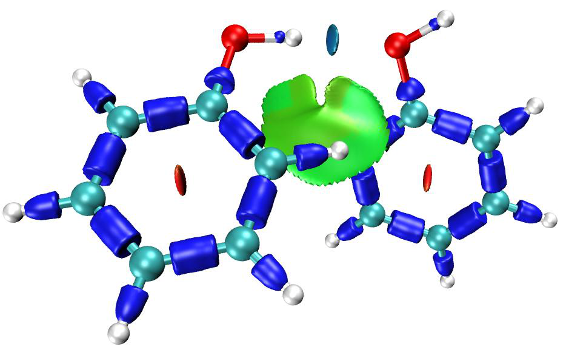
The IRIfill.vmd script employs the following color scale. The meaning of various colors is also explained in the following map.
The graphical effect of the IRI map is obviously quite satisfactory. The weak interaction regions are exhibited as nicely as NCI analysis, and the chemical bond regions are also clearly revealed by blue isosurfaces, indicating that electron density in these regions is very large and implying bonding effect is strong.
Note that the most suited isovalue of IRI function may be different for different systems, the default isovalue in the IRIfill.vmd script is 1.0. You can modify it in the .vmd script file (namely the value behind "mol representation Isosurface" in this script), or manually adjust it in "Graphics" - "Representations" panel of VMD.
Plotting scatter map between IRI and sign(λ2)ρ After calculating grid data of IRI, you can select option “2 Output scatter points to output.txt
in current folder”, the generated output.txt contains X, Y, Z, IRI and sign(λ2)ρ of every grid point. By this file and gnuplot plotting script examples\scripts\IRIscatter.gnu, you can plot a colored scatter
map between IRI and sign(λ2)ρ. Gnuplot is freely available at http://www.gnuplot.info. Move the output.txt and IRIscatter.gnu to the folder containing gnuplot executable file, then in this folder run command: gnuplot IRIscatter.gnu, after that you will find IRIscatter.ps in current folder. You can open it by Acrobat or Photoshop or IrfanView (with ghostscript installed), or convert it first to another image format using online image converter https://cloudconvert.com/image-converter and then open, you will see
By comparing color between the IRI isosurface map shown earlier and the scatter map, you can find correspondence between the spikes in the scatter map and isosurfaces. Clearly, the blue/cyan spikes between -0.02 and -0.03 a.u. correspond to the H-bond interaction, while the green spike at approximately 0.005 a.u. corresponds to vdW interaction, and the red spike at about 0.025 a.u.
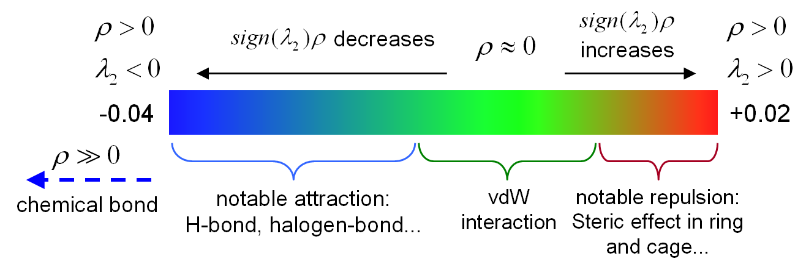
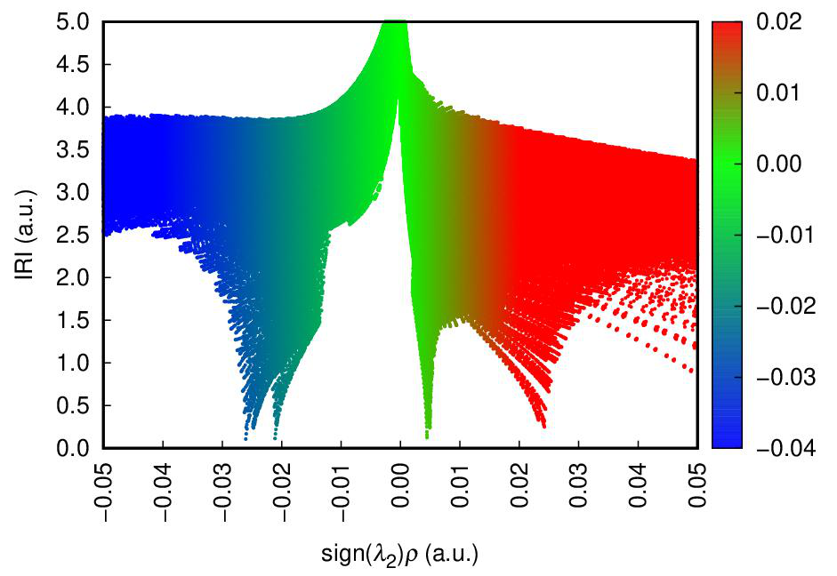
corresponds to the steric effect within the benzene rings.
The default range of X-axis of the plotting script is -0.05 to 0.05. If you properly extend it, then the spikes corresponding to chemical bonds can also be exhibited, you simply need to change lines 14 and 15 in the IRIscatter.gnu to
set xrange [-0.5:0.3]
set xtic -0.5,0.1,0.3 nomirror rotate font "Helvetica"
After rerunning the plotting script, you will obtain the following map, evidently the spikes between -0.4 and -0.3 a.u. correspond to chemical bonds, because electron density can reach this magnitude only in chemical bonding regions.
Plotting IRI map without covalent bond regions If you only hope to visualize noncovalent interactions in IRI map, the easiest way is choosing option “9 Screen out covalent bond regions (set IRI to 100 for regions with sign(lambda2)rho < -0.1 a.u.)” in the post-processing menu of IRI analysis. After that, if you export grid data and plot IRI map via VMD, you will find covalent bond regions have been screened out, as seen from the following map
Plotting plane map for IRI Sometimes it is also useful to plot a plane map for IRI to reveal interaction regions in a specific
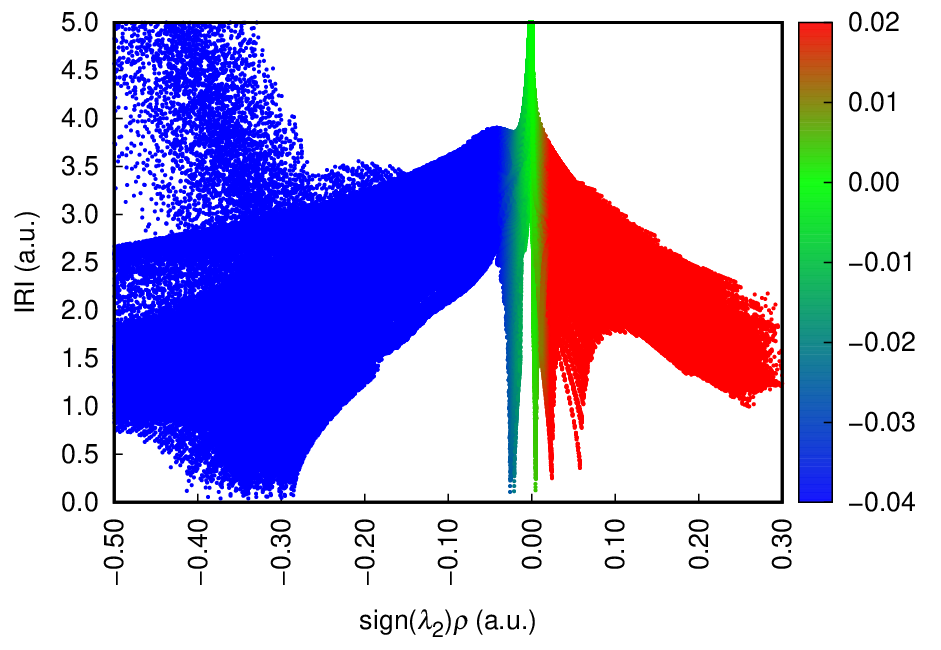
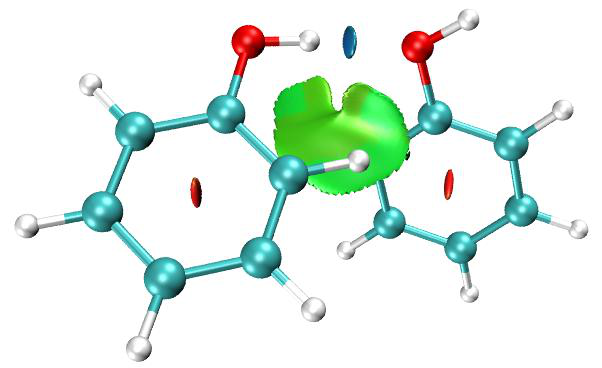
plane. Below I will illustrate how to realize this for examples\GC.wfn, which is a base pair dimer.
Boot up Multiwfn and input examples\GC.wfn
Multiwfn session
- 4 — Plot plane map
- 24 — IRI 1
Multiwfn session
- Use default number of grids 0 — Modify extension distance
- 1 — 1 Bohr 1
Z=0 Close the graph and then input
Multiwfn session
- 19 — Set color transition
- 2 — Reversed rainbow
- 4 — Enable showing atom labels and reference point
- 1 — Red 8
- Enable showing bonds 14 — Brown -1
The orange and green areas (IRI < 1.0) in this map clearly reveal the regions where notable chemical bond interaction and weak interaction occur. The regions with IRI >1.0 have either large gradient of electron density or negligible electron density, they are not of chemical interest.
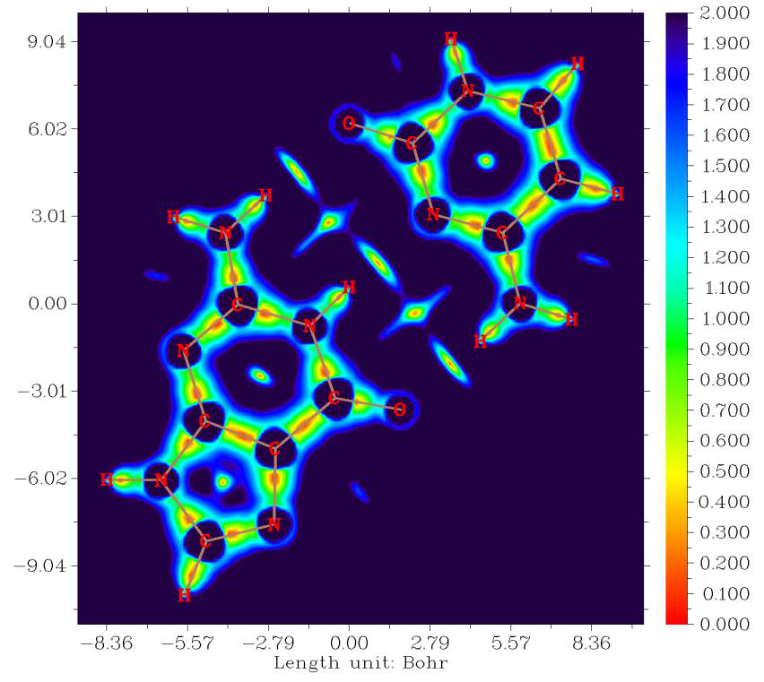
4.20.5 Simultaneously revealing covalent and noncovalent interactions in phenol dimer by DORI analysis¶
Frankly speaking, DORI (Density Overlap Regions Indicator) analysis is no longer valuable since IRI analysis was proposed by me, because IRI has similar capacity of revealing all kinds of interaction regions as DORI while the graphical effect is evidently better than DORI. However, I still use phenol dimer system to illustrate how to perform DORI analysis in Multiwfn. Please read Section 3.23.4 first to understand basic knowledge about DORI.
Boot up Multiwfn and input examples\PhenolDimer.wfn
Multiwfn session
- 20 — Visual study of weak interaction
- 4 — DORI analysis
- 3 — High-quality grid
- 3 — Export cube file Move func1.cub, func2.cub and plotting script examples\DORIfill.vmd to VMD folder. Then boot up VMD and input source DORIfill.vmd in console window, you will immediately see the graph below
The graphical effect of DORI map is obviously not as good as IRI map, especially the edge region of the isosurfaces corresponding to weak interactions look quite ugly. Furthermore, calculation cost of DORI is higher than IRI due to its much more complicated definition, therefore IRI should always be used instead of DORI.
The DORIfill.vmd employs the same color transition method and color scale as IRIvill.vmd. The most suited isovalue of DORI is different for different systems, the default isovalue in the DORIfill.vmd script is 0.95, you can modify it if you find it is inappropriate.
4.20.6 Visualizing and analyzing van der Waals potential¶
Note: Chinese version of this topic is my blog article “On the calculation and analysis of van der Waals potential as well as its plot in Multiwfn” (http://sobereva.com/551, in Chinese), which contains much more examples and additional discussions.
The concept of van der Waals (vdW) potential proposed by me has been carefully introduced in Section 3.23.7, please carefully read it first. In this section I will illustrate how to visualize and
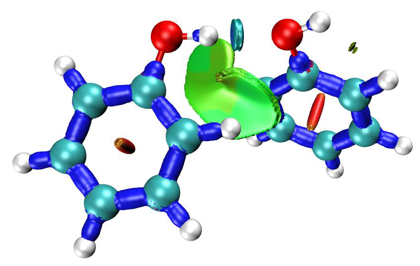
analyze vdW potential.
4.20.6.1 Example 1: Helicene
In this example I will illustrate visualizing the vdW potential for helicene, whose structure is shown below
To study vdW potential, you need to select a probe atom. For example, in this instance we want to employ He atom as probe atom, therefore we change "ivdwprobe" parameter in settings.ini to 2.
Now boot up Multiwfn and input examples\helicene.xyz
Multiwfn session
- 20 — Visual study of weak interaction
- 6 — Visualization of van der Waals potential
- 3 — High-quality grid (the computational cost of vdW potential is extremely low, therefore we use relatively good grid quality here)
As can be seen from the menu, now you can directly visualize vdW potential or its two components, namely repulsion potential and dispersion potential. You can also export their grid data to cube files. The unit used in this module is kcal/mol.
Now we choose option 3 to visualize isosurface map of the vdW potential, the resulting map with isovalue of 0.6 (kcal/mol) is shown on the left side below. If you want to only visualize the negative part, there is a trick: Set isovalue to -0.6 and unselect "Show both sign" check box, then select "Isosurface style" - "Exchange positive and negative colors", the resulting map is shown on the right side below ("Ratio of atomic size" has been changed to 4.0, the molecular representation now corresponds to superposition of atomic vdW spheres).
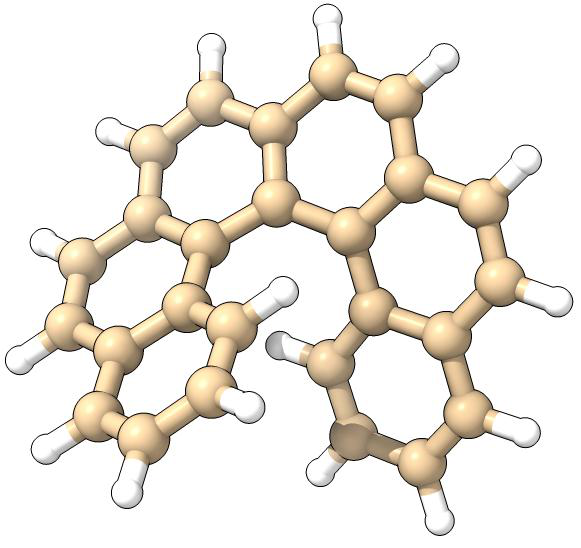
In the maps above, the blue isosurfaces represent the regions where vdW potential is negative, in these regions the dispersion attractive effect surpasses repulsion effect. It is expected that He atoms (or more generally, various small nonpolar molecules) will tend to be attracted to the blue regions due to dispersion interaction. All regions close to the nuclei are enclosed by green isosurface, indicating that repulsive potential dominates the vdW potential in these places, this is the normal case.
Can the vdW potential map be correlated with any practical observation? The answer is YES. I carried out 2500 ps molecular dynamics simulation under 10 K for the complex consisting of a helicene molecule and a He atom based on the GFN0-xTB theory in the Grimme's xtb code, the trajectory frames (small spheres) and the isosurface of spatial distribution function (orange isosurface) of the He atom are shown below
It can be seen that the majority of trajectory frames and the main distribution of spatial distribution function are highly analogous to the blue regions in the vdW potential map showing earlier, demonstrating that the vdW potential is indeed able to exhibit the favorable adsorption regions if vdW interaction dominates the intermolecular interaction (of course, the precondition is that both the adsorbate and the local region of adsorption sites are nearly nonpolar, otherwise electrostatic interaction will largely control the adsorption behavior, in this case you should examine electrostatic potential rather than vdW potential).
By the way, there is another way of visualizing grid data of vdW potential, namely plotting vdW potential
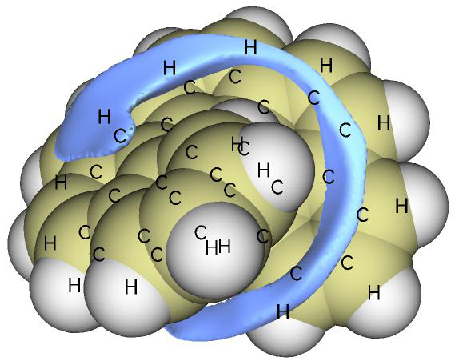
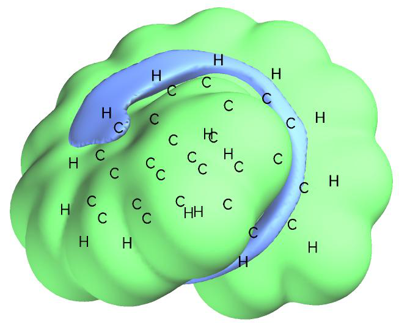
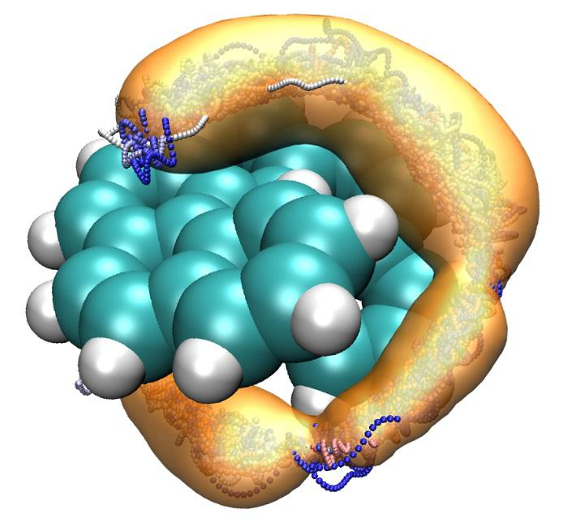
colored vdW surface map, the procedure in Windows system is: copying vdWpot.bat and vdWpot.txt from "examples\scripts\vdWpot" folder to current folder, properly modifying the path of input file and VMD folder in the .bat file, and then run this .bat file. After that, boot up VMD, copying all content from the vdWpot.vmd file in "examples\scripts\vdwpot" folder to the VMD console window, you will see the vdW potential colored \(\rho=0.001\) surface (note that the ρ is estimated using promolecular approximation). However, since the graphical effect of this kind of map is not quite good, I prefer to study vdW potential in terms of isosurface map.
4.20.6.2 Example 2: Cyclo[18]carbon
The cyclo[18]carbon system was very extensively studied in my works Carbon, 165, 468 (2020), Carbon, 165, 461 (2020) and http://sobereva.com/carbon_ring.html for more. In this example I will illustrate how to plot plane map of vdW potential for this system. The structure
optimized at ωB97XD/def2-TZVP level is given as examples\C18.xyz. As you can see, this system is exactly planar and fully lying in the XY plane with Z=0.
We will plot color-filled map of vdW potential on the molecular plane. To do so, we need to change user-defined function to vdW potential, namely setting "iuserfunc" parameter in settings.ini to 92. We still use He element as probe atom like the last example, therefore "ivdwprobe" in settings.ini should be set to 2.
Boot up Multiwfn and input examples\C18.xyz
Multiwfn session
- 4 — Plot plane map
- 100 — User-defined function
- 1 — Color-filled map [Press ENTER button directly to use recommended grid]
- 0 — Set extension distance
- 10 — 10 Bohr 1
- XY plane 0 — Z value Click right mouse button on the graph to close it, then input
- 1 — Set lower&upper limit of color scale
- -0.8,0.8 — Note that unit is kcal/mol for vdW potential
- 4 — Enable showing atom labels
- 12 — Dark green
- 8 — Enable showing bonds
- 14 — Brown 19
- Set color transition 8 — Blue-White-Red
- 2 — Enable showing contour lines Now select option -1 to replot the map, you will see
In this map, red and blue colors represent positive and negative vdW potential, respectively. From the map it can be seen that the vdW potential around the center of the cyclo[18]carbon is fairly negative and thus this place has strongest ability in adsorbing nonpolar molecules. In the peripheral region of this system the vdW potential is modestly negative, implying that nonpolar molecule can only weakly interact with this system in this area due to dispersion attraction.
Please plot isosurface map of vdW potential as well as plane map of vdW potential in YZ plane, so that you can better understand the overall distribution of vdW potential around this unusual system. Via main function 3, you can also plot vdW potential between two given points, therefore you can easily study variation of vdW potential starting from the ring center in the direction perpendicular to the ring.
It is worth to note that it is very easy to obtain value of vdW potential at a given point, for example, the center of this system, whose position is exact (0,0,0). You simply need to enter main function 1, input 0,0,0, then choose either Bohr or Å as unit, then the following information can be found from screen:
User-defined real space function: -0.6979258635E+00
that is the vdW potential (with He as probe atom) is -0.70 kcal/mol.
Basin analysis on vdW potential If you want to obtain most negative value of vdW potential, you can make use of the powerful basin analysis module, which is detailedly illustrated in Section 4.17. Now we use this module to find the most negative value of vdW potential for the cyclo[18]carbon.
IMPORTANT NOTE: Multiwfn also supports performing topology analysis on vdW potential to obtain its minima, see Section 4.2.10 for example, the result is more accurate than using the basin analysis module. Therefore, using topology analysis module is preferred over the way illustrated below!
Boot up Multiwfn and input below commands examples\C18.xyz 17 // Basin analysis
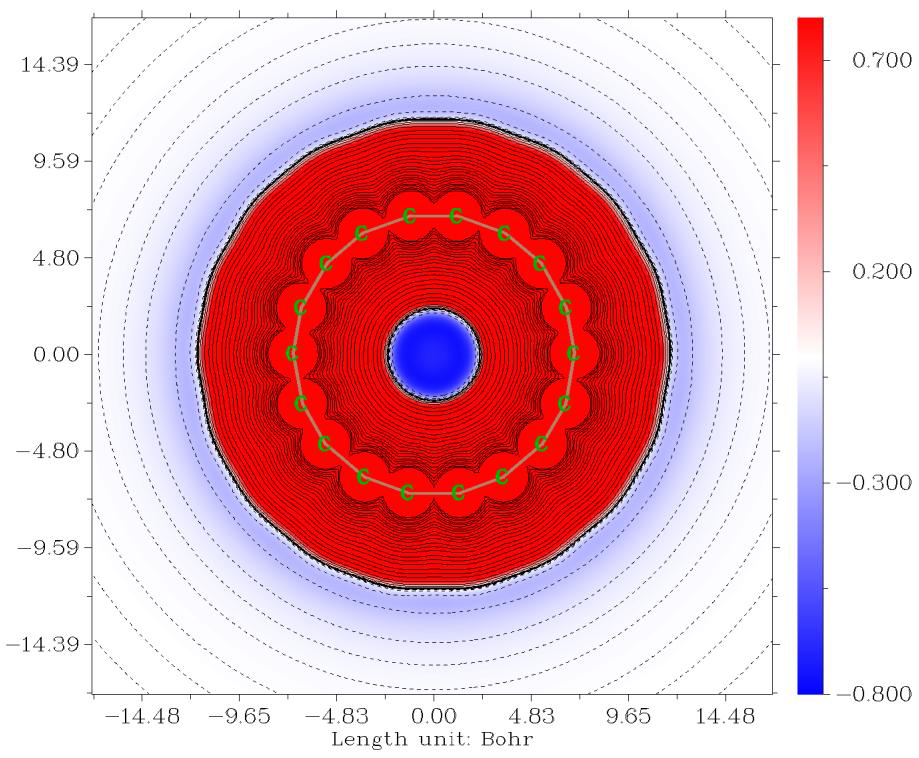
Multiwfn session
- 1 — Generate basins and locate attractors
- 100 — User-defined real space function. Now it corresponds to vdW potential with He as probe atom
2 // Medium-quality grid Wait for a while until the calculation is complete, then you can choose option 10 to visualize the located minima of the vdW potential
Only the minima around the ring center are of chemical interest. As can be seen, these minima are automatically clustered together and share the same index (1), they can be viewed as degenerate minima. The minima at peripheric region of the ring can be ignored because they basically resulted from numerical noise.
Then input
Multiwfn session
- -3 — Show information of attractors
- y — Show attractors after sorting according to their values
Then you can see position and value of each minimum before clustering. Finally, you can see the positions and values of the final minima (i.e. after clustering):
Attractor X,Y,Z coordinate (Angstrom) Value
1 0.00000000 0.00000000 -0.01763924 -0.757315492E+00
21 0.00000000 -6.45596244 -0.52917725 -0.242350606E+00
36 0.00000000 -6.45596244 0.52917725 -0.242350606E+00
28 6.37658585 -1.08481336 -0.50271839 -0.242126321E+00
[...ignored]
Clearly, the minima of vdW potential (e.g. the points sharing attractor index of 1) in this system is -0.757 kcal/mol. The printed coordinate "0.00000000 0.00000000 -0.01763924" corresponds to average of all of its members.
If then you want to plot the minima via visualization softwares such as VMD, you can select "-4 Export attractors as pdb/pqr/txt/gjf file", then select corresponding option to export attractors.pdb in current folder, the meanings of atom index and residue index in this file are explicitly shown on screen. Specifically, if you load this file into VMD, you can use "resid 1" as selection to plot the global minima, since they share index of 1.
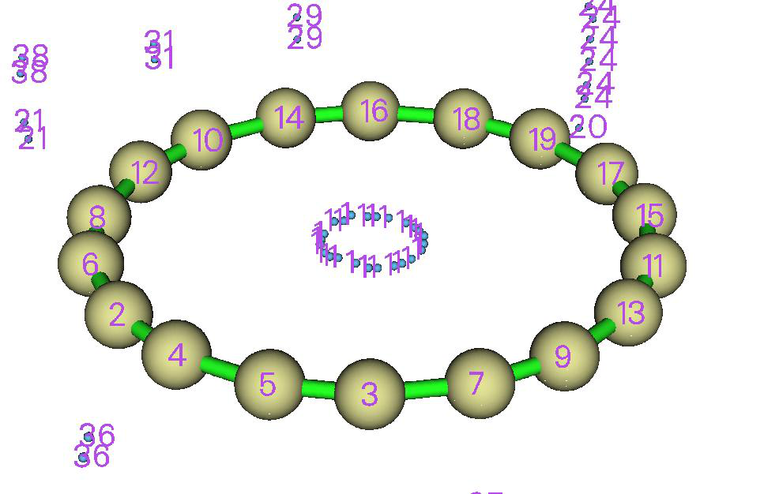
4.20.10 Visualize and quantify weak interactions by Independent Gradient Model (IGM)¶
Please read Section 3.23.5 and my reviews DOI: 10.1016/B978-0-12-821978-2.00076-3 and Angew. Chem. Int. Ed., 137, e202504895 (2025) DOI: 10.1002/anie.202504895 to gain basic knowledge about the Independent Gradient Model (IGM) method proposed in Phys. Chem. Chem. Phys., 19, 17928 (2017). If you are not familiar with NCI analysis, you should also first read Section 3.23.1, since many aspects of IGM analysis are closely related to the NCI analysis. In this section I will illustrate the use of IGM analysis in Multiwfn via several examples. More discussions and instances can be found in my blog article "Investigating intermolecular weak interactions via Independent Gradient Model (IGM)" (in Chinese, http://sobereva.com/407).
Because IGM method is independent of wavefunction, you can use any kind of input file containing atomic coordinate information, such as .xyz, .mol and .pdb (see Section 2.5 for details). The VMD program used throughout this section is version 1.9.3, it is freely available at http://www.ks.uiuc.edu/Research/vmd/.
NOTE: If your system is not extremely large and wavefunction file can be generated, I strongly suggest using IGMH instead of IGM to gain more reasonable result. IGMH is an improved version of IGM, see Section 3.23.6 for introduction and Section 4.20.11 of example. Even if IGMH cannot be used due to computational cost reason or unavailability of wavefunction file, using mIGM instead of IGM is strongly suggested, see Section 3.23.10 for introduction and Section 4.20.12 for example.
4.20.10.1 Example 1: Guanine-cytosine (GC) base pair
The IGM framework includes many useful ideas and defined many useful concepts, a series of analyses will be conducted in this example. A simple system guanine-cytosine (GC) base pair is taken as instance here. Some analyses may be ignored in practical studies, and sequence of analyses is completely arbitrary.
(1) Studying \(\delta g\) function We first study the distribution character of δg function by plotting it as color-filled plane map. Boot up Multiwfn and input below commands
examples\GC.pdb 4 // Plot plane map
Multiwfn session
- 22 — \(\delta g\)
- 1 — Color-filled map [Press ENTER button to use default grid setting]
- 1 — XY plane 0
Multiwfn session
- 1 — Set color scale
- 0,0.2 — Lower and upper limits
- 4 — Show atomic labels
- 1 — Red color
- -2 — Set label intervals of axes
- 3,3,0.02 — Intervals for X, Y and color bar
Multiwfn session
- 8 — Enable showing bonds
- 14 — Brown -1
The graph above clearly reveals all interatomic interactions, and the magnitude of \(\delta g\) is positively relevant to interaction strength. As can be seen from the graph, all chemical bond regions
have large \(\delta g\) value (the region with value higher than 0.2 is shown as white). \(\delta g\) function also outlines three hydrogen bond regions among the base pair, where the δg function has evidently smaller value compared to the chemical bond regions.
\(\delta g\) can also be plotted as isosurface map. Return to main menu and input
Multiwfn session
- 5 — Calculate grid data
Multiwfn session
- 22 — \(\delta g\)
- 2 — Medium-quality grid
- -1 — Show isosurface The isosurface with isovalue of 0.15 and 0.03 are shown below (you can use higher quality of grid or set the extension distance of grid data smaller to make the graph smoother)
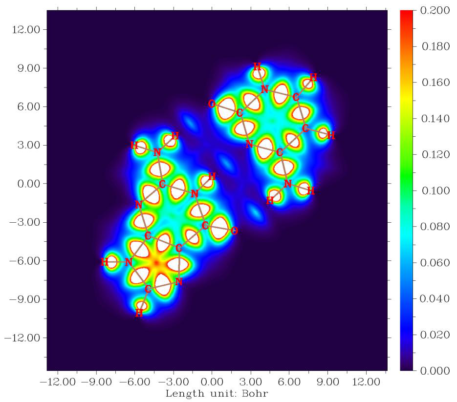
Since chemical bond regions have relatively large value of \(\delta g\), only chemical bonding interactions are visible when isovalue is set to 0.15. Clearly, δg may be used as a function to exhibit chemical bonds like ELF and IRI functions, with additional advantage that only geometry information is needed. The weak interaction regions can also be simultaneously visualized when isovalue is decreased to a small value, e.g. 0.02.
(2) Studying \(\delta g\)inter function between base pair \(\delta g^{inter}\) is a key function in the IGM analysis framework, it is designed to reveal interaction regions between two (or even more) fragments defined by users. Here we plot this function to study the interactions between the two bases. Although as shown earlier, these interactions can also be
revealed by simply drawing \(\delta g\), the isosurfaces corresponding to intrafragment interactions severely polluted the graph. Fortunately, the IGM analysis allows us to separate the δg as δginter and δgintra, which solely reflect the contribution to δg due to interfragment and intrafragment interactions, respectively.
Return to main menu and input following commands
Multiwfn session
- 20 — Visual study of weak interactions
- 10 — IGM analysis
- 2 — Define two fragments
- 1-13 — Range of atoms in the first base
- 14-29 — Range of atoms in the second base (you can also input c here to define the rest of the present system as the second fragment)
2 // Medium-quality grid After calculation, you will see a post-processing menu. The meaning of each option has been
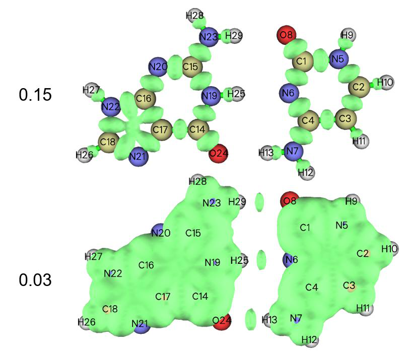
If you are familiar with NCI method, you will naturally know how to discuss this graph, now
we try to identify character of peaks in the scatter graph. In the region where sign(λ2)ρ is about -0.04, you can find that the \(\delta g^{\text{inter}}\) has a remarkable peak (with height about 0.06), which implies presence of hydrogen bonds. If δginter isosurface is set to an isovalue lower than about 0.06, the corresponding isosurfaces should be visible in the graph. In the region where sign(λ2)ρ is approximately +0.02, there is also a small peak of δginter. Since positive sign(λ2)ρ implies repulsive interaction, the peak may reflect weak steric regions in the center of the two rings between the two
bases. In above scatter map, there is a very prominent peak of δgintra around sign(λ2)ρ = -0.3. Since this peak corresponds to intrafragment interaction, and corresponding sign(λ2)ρ is not only negative but large, rendering attractive and strong interaction, the peak must result from chemical bond.
Using Multiwfn you can directly visualize isosurface of \(\delta g^{\text{inter}}\) and δgintra. To do this, we close the scatter map, select option "4 Show isosurface of grid data", then choose corresponding options and properly set isovalue, you will obtain below isosurface graphs
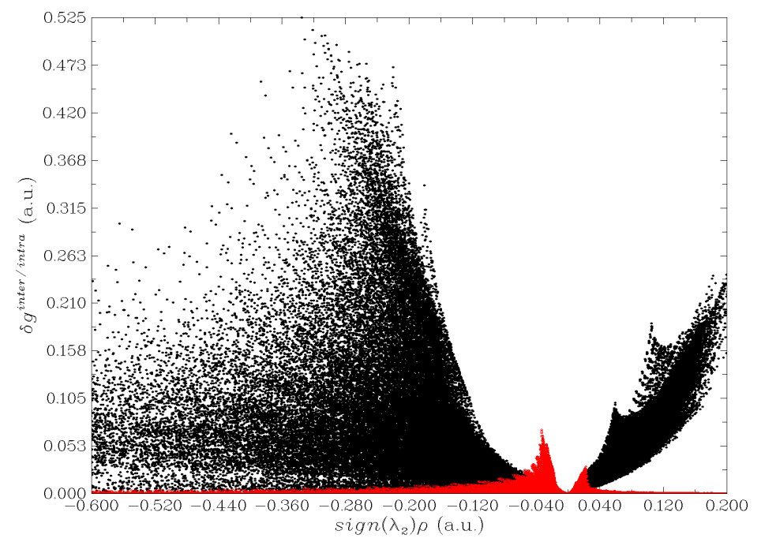
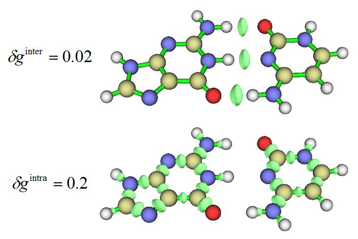
As can be seen, \(\delta g^{inter}\) and δgintra indeed solely exhibit inter- and intra-fragment interactions, respectively. This greatly facilitates separate discussion of the two kinds of interactions.
From the above \(\delta g^{inter}\) = 0.02 isosurface map we are only able to visualize hydrogen bond regions. To find steric region in the ring center between the two bases, we should further decrease
the isovalue of \(\delta g^{inter}\) to e.g. 0.008, as shown below. The ring-center steric regions are highlighted by arrows.
(3) Drawing sign(λ2)ρ mapped \(\delta g^{inter}\) isosurfaces If sign(λ2)ρ is mapped to δginter isosurfaces by different colors, then one can not only recognize where weak interactions occur, but also immediately capture the character of the interactions. Multiwfn itself is currently unable to plot color-filled isosurface map, we need to use VMD program to do this, just like what we do in the NCI analysis.
Select option "3 Output cube files to current folder" in IGM post-processing menu, then
sign(λ2)ρ, δg, \(\delta g^{inter}\) and δgintra will be exported to sl2r.cub, dg.cub, dg_inter.cub and dg_intra.cub in current folder, respectively. Move sl2r.cub and dg_inter.cub as well as VMD plotting script examples\IGM_inter.vmd into VMD folder. Boot up VMD, input source IGM_inter.vmd in the console window, you will immediately see the graph below
The default isovalue employed by the IGM_inter.vmd script is 0.01, you can manually change isovalue by dragging the isovalue bar in "Graphics" - "Representation" panel. In the script the
default color scale of sign(λ2)ρ ranges from -0.05 to 0.05, and the default color transition is Blue-Green-Red. Therefore, the bluer the isosurface, the stronger the attractive interaction, while the redder the isosurface, the larger the steric effect. Green zone in an isosurface implies that the corresponding interaction is weak and may be regarded as van der Waals interaction.
Similarly, you can plot sign(λ2)ρ mapped δgintra isosurfaces. Just move sl2r.cub and dg_intra.cub as well as the corresponding VMD plotting script examples\IGM_intra.vmd into VMD
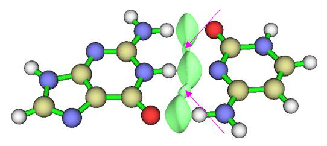
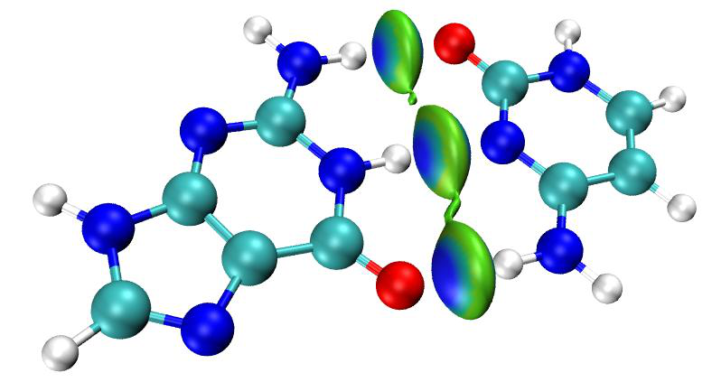
folder, then input source IGM_intra.vmd in the console window to execute it.
(4) Decomposing interfragment interaction as atom and atomic pair contributions
Part of content of atmdg.txt is pasted here:
Atom delta-g indices of fragment 1 and percentage contributions
Atom 6 : 0.496653 ( 23.07 % )
Atom 13 : 0.483135 ( 22.44 % )
Atom 8 : 0.411759 ( 19.13 % )
[ignored...]
Atom delta-g indices of fragment 2 and percentage contributions
Atom 25 : 0.589516 ( 27.39 % )
Atom 24 : 0.431975 ( 20.07 % )
Atom 29 : 0.388667 ( 18.06 % )
[ignored...]
Atom pair delta-g indices and percentage contributions (zero terms are not shown)
13 24 : 0.251327 ( 11.68 % )
6 25 : 0.236065 ( 10.97 % )
8 29 : 0.218248 ( 10.14 % )
If you compare above data with the structure map of present system shown below, you will find the indices are very meaningful and useful for discussing interfragment interactions
The largest three \(\delta G^{atom}\) of fragment 1 are 6, 13 and 8, while that of fragment 2 are 25, 24 and 29, they are just the atoms closest to another fragment, undoubtedly they should have the most important contributions to the interfragment interactions. H13-O24, N6-H25 and O8-H29 have the
largest δGpair, reflecting that they are the most crucial interactions for formation of the base pair.
Note that Multiwfn also exports IBSIW (intrinsic bond strength index for weak interactions) to IBSIW.txt. Its definition has been described in Section 3.23.6. This index may have stronger
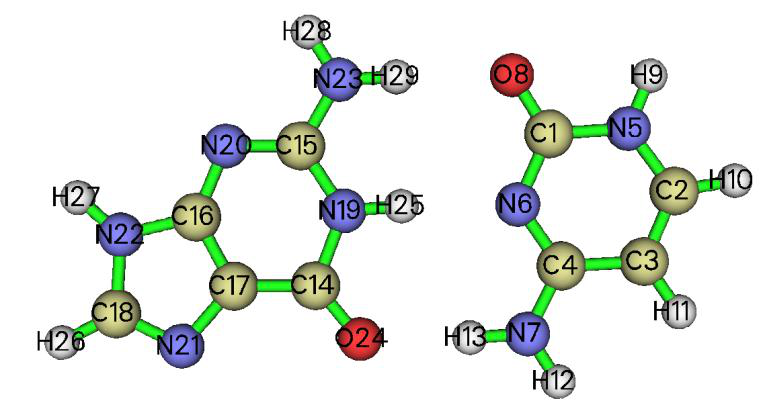
correlation with interatomic interaction strength than atomic pair \(\delta g\) index.
(5) Coloring molecular structure by percentage atom \(\delta g\) indices Using VMD, it is also possible to map δGatom and δGatom(%) on molecular structure, so that relative importance of various atoms for interfragment interaction can be vividly exhibited. If
needed, the \(\delta g\)inter isosurfaces can also be shown together. Now we plot such a map.
First, plot color-filled \(\delta g\)inter isosurfaces using the IGM_inter.vmd script as mentioned earlier. After that, we need to remove the default representation showing molecular structure, so we enter "Graphics" - "Representation", choose the first term (its current style is CPK), click "Delete Rep" button. Then we drag the previously generated atmdg.pdb into VMD main window to load it. In this
file the “occupancy” field records δGatom(%), to graphically exhibit its value for every atom, we should let VMD color the atoms according to their occupancy property. We enter "Graphics" - "Representation" again, set "Drawing method" to CPK, and set "Coloring method" to “Occupancy”, then click "Trajectory" tab, set upper limit of color scale to 50 and press ENTER button, now the system in graphical window should look like below
Since the color transition set by IGM_inter.vmd is Blue-Green-Red, the largest percentage atom
\(\delta g\) index in present case is 27% (as can be seen in atmdg.txt), while currently the range of color scale for mapping δGatom(%) is set to 0~50, therefore in the map above, the greener the atom, the larger the δGatom(%). The green atoms may be viewed as "hot atom" for interfragment interactions. Contribution to interfragment interactions due to the blue atoms can be ignored, since their δGatom(%) are very close to zero.
This example ends here, through this example I think you have already recognized basic steps of IGM analysis. In next several examples I will illustrate more.
Skill: Plotting sign(λ2)ρ colored IGM scatter map In Part (2) of this example, I have shown how to directly use Multiwfn to plot scatter map
IGM_inter.vmd
Multiwfn session
- Run below commands examples\GC.pdb 20 — Visual study of weak interactions
- 10 — IGM analysis
- 2 — Define two fragments
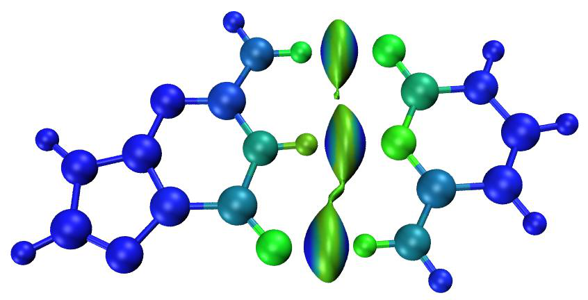
Multiwfn session
- 1-13 — Range of atoms in the first base
- 14-29 — Range of atoms in the second base
- 2 — Medium-quality grid
- 2 — Output scatter points to output.txt Then copy the exported output.txt and the plotting script examples\scripts\IGMscatter.gnu to the file containing gnuplot executable file, then in this folder run command: gnuplot IGMscatter.gnu, after that you will obtain IGMscatter.ps. If you open it by Acrobat or Photoshop or IrfanView (with ghostscript installed), or convert it to other image formats first via online tool https://cloudconvert.com/image-converter and then open it, you will see
In the current graph, the Y-axis corresponds to δginter. In the IGMscatter.gnu, the default color scale is identical to the one adopted in IGMinter.vmd, namely -0.05~0.05.
If you want to use this script to plot δgintra vs. sign(λ2)ρ, you should change "4:1:4" in the IGMscatter.gnu to "4:2:4"; while if you want to plot δg vs. sign(λ2)ρ, you should change it to"4:3:4".
If you find the range of X-axis is not appropriate, you can change the data behind "xtic" and "xrange"; while if Y-axis is not appropriate, you can change "ytic" and "yrange".
4.20.10.2 Example 2: C60-coronene dimer
In this example, we will carry out IGM analysis for C60-coronene dimer, and finally plot the map below using VMD based on the data outputted by Multiwfn.
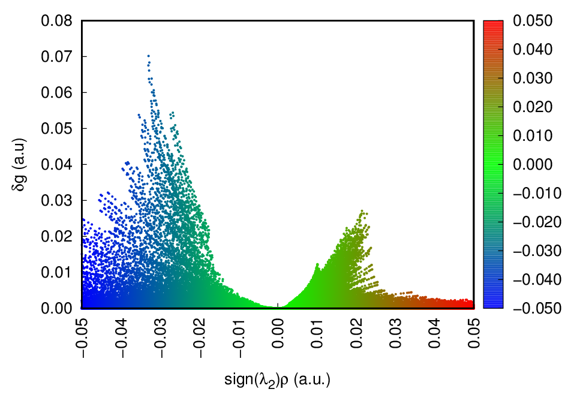
In the map above, the major van der Waals interaction region (more specifically, the \(\pi-\pi\) stacking region) is exhibited as green isosurface, the more red-colored atoms contribute to the interaction more. If you think this graph is pretty and want to reproduce it, just follow the steps below.
The pdb file of the dimer optimized at PM6-D3 level using Gaussian is provided as examples\C60_coronene.pdb. Boot up Multiwfn and load it, then input below commands
Multiwfn session
- 20 — Visual study of weak interactions
- 10 — IGM analysis
- 2 — Define two fragments
- 1-60 — C60 is fragment 1 c
Medium-quality grid
Multiwfn session
- 3 — Output cube files in current folder
Multiwfn session
- 6 — Evaluate atom and atomic pair δg indices
- 2 — High quality y
Next, we need to draw the \(\delta g^{inter}\) isosurface on the map. Drag dg_inter.cub into VMD main window to load it, then enter "Graphics" - "Representation", change the default style from "lines" to "Isosurface", set "Draw" to "Solid Surface", set "Show" to "Isosurface", then input 0.004 in the
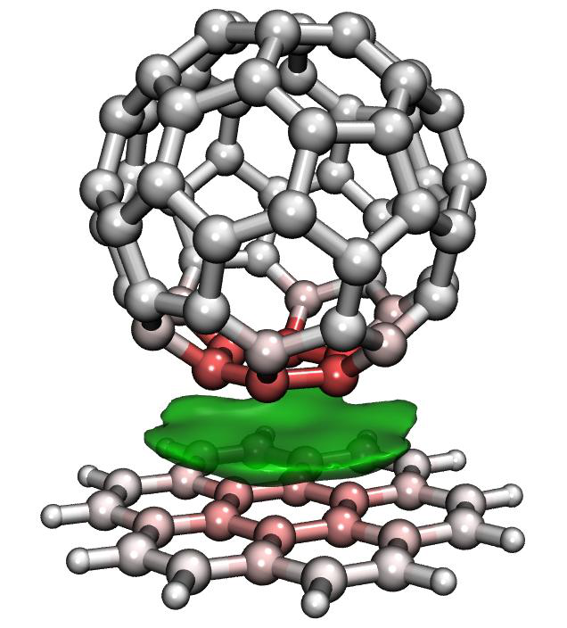
"Isovalue" box and press ENTER button. Change "Coloring Method" to "ColorID" and select "7 green". Change the "Material" to "EdgyGlass".
Finally, we render the map. Select "File" - "Render", choose "Tachyon (internal, in-memory rendering)" and click "Start Rendering" button, then you will obtain the graph shown at the beginning of this section. The resulting graphical file is .tga format, you can use such as IrfanView or Photoshop to visualize it.
Note that in present example, color-filled effect is only applied to molecular structure, but not applied to isosurface. This is because in VMD, setting of color transition is shared by all representations, that means we cannot use Blue-White-Red color transition for molecular structure but use conventionally employed Blue-Green-Red color transition for isosurface. Considering that in present system there is only one kind of interaction, namely van der Waals interaction, and in conventional color-filled IGM map this region is basically colored by green, I decide directly assign green color for the whole isosurface, so that we are able to freely set color transition mode for coloring molecular structure.
4.20.10.3 Example 3: Oxazolidinone trimer
The IGM module of Multiwfn is extremely flexible, it can be applied to any number of fragments. In this example I use oxazolidinone trimer to show this point. The geometry was taken from J. Chem. Theory Comput., 11, 3065 (2015).
We first use \(\delta g^{\text{inter}}\) to reveal all interactions between the three monomers. Boot up Multiwfn and input
Multiwfn session
- examples\oxazolidinone_trimer.xyz 20 — Visual study of weak interactions
- 10 — IGM analysis
- 3 — Define three fragments
- 1-11 — Fragment 1: Monomer 1
- 12-22 — Fragment 2: Monomer 2
- 23-33 — Fragment 3: Monomer 3
- 2 — Medium-quality grid
- 3 — Output cube files in current folder
Then we use aforementioned method to plot color-filled \(\delta g^{\text{inter}}\) isosurface map via IGM_inter.vmd script, you will see the graph below
From color of isosurfaces in the graph it is found that the 1-2 and 1-3 interactions correspond to typical hydrogen bonding, while 2-3 interaction is significantly weaker and thus more appropriate
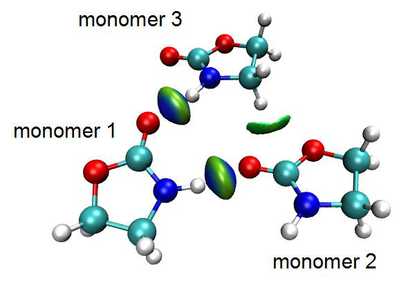
to be assigned as van der Waals interaction.
Assume that we only want to study interactions between 1-2 and 2-3, and meantime wish to
screen the δginter isosurface corresponding to 1-3 interaction, how to do that? The answer is: Only define two fragments, making fragment 1 correspond to monomer 2, while making fragment 2 correspond to monomers 1 and 3. Now we do this, input below commands
Multiwfn session
- 0 — Return to last menu
- 10 — IGM analysis
- 2 — Define two fragments
- 12-22 — Fragment 1: Monomer 2
- 1-11,23-33 — Fragment 2: Monomers 1 and 3
- 2 — Medium-quality grid
- 3 — Output cube files in current folder
Multiwfn session
- 6 — Evaluate atom and atomic pair δg indices
- 2 — High quality y
Then plot δginter isosurface again using the newly generated sl2r.cub and dg_inter.cub via IGM_inter.vmd, and mean time color the structure according to δGatom(%) based on the atmdg.pdb file, you will finally obtain the graph below
Now the isosurface corresponding to monomer 1-3 interaction is invisible. Since the color transition set by IGM_inter.vmd is Blue-Green-Red, and I did not manually adjust the automatically
determined color range for mapping δGatom(%), therefore, in present graph, the site having largest δGatom(%) is rendered as red, it should be regarded as "hottest atom" for the interactions under study. The green or cyan atoms have modest magnitude of δGatom(%), while contribution of blue atoms to the interaction is completely negligible.
Finally, let us only highlight interaction between monomer 1 and 2 while completely ignore monomer 3. Input below command
Multiwfn session
- 0 — Return to last menu
- 10 — IGM analysis
- 2 — Define two fragments
- 1-11 — Fragment 1: Monomer
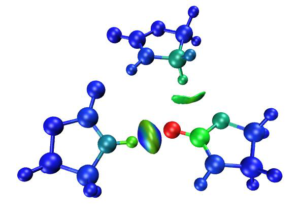
Multiwfn session
- 12-22 — Fragment 2: Monomers 2
- 2 — Medium-quality grid
- 3 — Output cube files in current folder Move the resulting dg_inter.cub and sl2r.cub to VMD folder and use the IGM_inter.vmd script to draw corresponding color-filled isosurface map. It is better to make monomer 3 transparent, since currently it is uninteresting. So, we enter "Graphics" - "Representation", click the existing representation with CPK style, input fragment 0 1 in the "Selected Atoms" box and press ENTER button, now the monomer 3 is invisible. Next, click "Create Rep" button, input fragment 2 in the "Selected Atoms" box and press ENTER button, then set the "Drawing method" as "Licorice" and change the "Bond Radius" to 0.2, then set "Material" to "Ghost". Now you should see the graph below, in which only the interaction between monomers 1 and 2 is visible, while all interactions related to monomer 3 are ignored.
PS: The concept of "fragment" in VMD is different to the "fragment" in IGM analysis of Multiwfn. In VMD, when structure file is loaded into VMD, the bonding relationship is automatically determined, and then each unlinked fragment is assigned to a unique fragment index. The index starts from 0.
As can be seen in this example, the partition of fragments is highly arbitrary. The union set of all fragments is not necessarily equal to the whole system. When you intend to study intramolecular interaction, a whole molecule can also be divided into multiple fragments to reveal interesting interaction regions.
In this example only a simple system is taken as instance, however I think it is enough to substantially exhibit the extreme flexibility and powerfulness of IGM analysis, Multiwfn and VMD programs. The IGM method can also be easily applied to much more complicated systems; for example, in my blog article http://sobereva.com/407 (in Chinese), I showed that IGM can clearly reveal the interaction between two monomers in a tetramer consisting of four large flexible molecules.
It is worth to mention that \(\delta g\) value at bond critical points (BCP) is positively correlated to interaction strength (see Table 1 of IGM original paper), Multiwfn is also able to calculate it. First, load a file containing wavefunction information into Multiwfn, then use main function 2 to carry out topology analysis and locate BCPs, then use option 7 to examine properties of the BCPs, from
screen you can directly read \(\delta g\) value. I do not explicitly present a corresponding analysis example
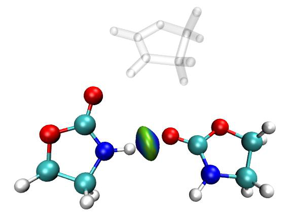
here, please try this kind of analysis yourself.
4.20.11 Using IGMH (IGM based on Hirshfeld partition of molecular density) to study weak interactions¶
Please check original paper of IGMH (J. Comput. Chem., 43, 539 (2022) https://doi.org/10.1002/jcc.26812), Section 3.23.6 of this manual, Angew. Chem. Int. Ed., 137, e202504895 (2025) DOI: 10.1002/anie.202504895, and DOI: 10.1016/B978-0-12-821978-2.00076-3 to gain basic knowledge about IGMH method. If you can read Chinese, please also check http://sobereva.com/621, which contains comprehensive and clear introduction of IGMH as well as many relevant discussions.
In this section I will only present an extremely simple IGMH example. A very detailed tutorial (about 40 pages) carefully introducing how to perform various kinds of IGMH analysis for both molecular and periodic systems can be downloaded at http://sobereva.com/multiwfn/res/IGMH_tutorial.zip, do not forget to check it!
The use of the IGMH analysis function is exactly identical to IGM, thus if you have carefully read Section 4.20.10, you will be able to realize IGMH analysis smoothly. In this section, I use a dimer consisting of 2-pyridoxine and 2-aminopyridine as an example, this system has also been studied via AIM analysis in Section 4.2.1.
Boot up Multiwfn and input examples\2-pyridoxine_2-aminopyridine.wfn // Since IGMH relies on wavefunction information, therefore you should use such as .wfn, .fch, .mwfn, .molden, etc. as input file
Multiwfn session
- 20 — Visual study of weak interaction
- 11 — IGMH analysis
- 2 — Define two fragments
- 1-12 — Atom indices in fragment 1
- 13-25 — Atom indices in fragment 2
- 2 — Medium-quality grid
- 3 — Output cube files to current folder
Next, in order to plot sign(λ2)ρ colored δginter isosurface map, we move the exported sl2r.cub and dg_inter.cub from current folder to VMD folder, then copy the examples\IGM_inter.vmd script to VMD folder, then boot up VMD and run source IGM_inter.vmd command in VMD console window to execute the plotting script.
The color bar of this map is IGMH_colorbar.png in “examples” folder. Since the blue around
IGMH_colorbar.png
Hint: If you hope to make the radius of the isosurfaces in the map above smaller, so that only the most important interaction areas are shown, you can increase the isovalue from 0.01 to 0.015, namely entering "Graphics" - "Representation", change the value in the "Isovalue" box to 0.015 and then press ENTER button. In this case, you can also make the range of color scale narrower than default (-0.05~0.05) to make the color on the isosurfaces more vivid, namely in the "Representation" interface click "Trajectory" tab, then input -0.045 and 0.045 respectively in the two boxes and then press ENTER button.
In the post-processing menu, you can also choose option 6 to calculate atomic and atomic pair
δg indices (i.e. δGatom and δGpair indices), the result calculated with high-quality grid is shown below
Atom pair delta-g indices and percentage contributions (zero terms are not shown)
12 13 : 0.116367 ( 16.57 % )
1 25 : 0.096210 ( 13.70 % )
2 13 : 0.052037 ( 7.41 % )
1 23 : 0.042800 ( 6.09 % )
...[ignored]
From this quantitative data, we can further confirm the conclusion that the N-H12···N13 is stronger than the N-H25···O1.
For comparison purposes, you can plot the same map via IGM module, the sign(λ2)ρ colored δginter isosurface map is shown below (the sign(λ2)ρ was calculated using actual density rather than promolecular density). As can be seen, the graphical effect of IGM is much poor than IGMH, since the isosurfaces are too bulgy and thus difficult to examine and compare, this problem cannot be fully avoided even if you carefully adjust isovalue. Many comparisons between IGM and IGMH can be found in the original paper of IGMH.
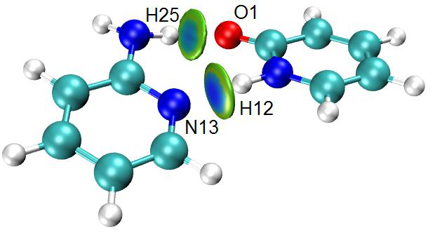
Skill: Significantly reducing cost of IGMH visual analysis for interfragment interactions Most people use the IGMH method primarily for visualization and analysis of interfragment
interactions. In practice, this only requires calculating the δginter and sign(λ2)ρ grid data in the overlapping regions between fragments; grid points in all non-overlapping regions are completely unnecessary. Taking this into account, a strategy is supported in Multiwfn to significantly reduce the cost of grid data calculation in IGMH (and mIGM, IGM). The implementation is as follows: A parameter named “IGMvdwscl” can be found in settings.ini file. The surface of each fragment is defined as the union of atomic spheres, where vdW radius of each atom is scaled by “IGMvdwscl”. During the grid data calculation step of IGMH, mIGM, or IGM analysis, a grid point is computed only if it lies within the overlapping region between the surfaces of two or more fragments; otherwise, it is directly skipped. With this strategy, the time required to compute IGMH grid data is often reduced by several times or more. The exact percentage of time saved depends on how large a portion of the user-defined grid box consists of ignorable grid points.
Obviously, after enabling this strategy, you can only plot isosurfaces of δginter. Isosurfaces of δg or δgintra can no longer be plotted, because only the δginter isosurfaces are guaranteed to appear exclusively in the interfragment overlap regions.
“IGMvdwscl” defaults to 0, which means the time-saving strategy is disabled. To enable this strategy, set “IGMvdwscl” to an appropriate positive value. The larger the value, the weaker the time-saving effect; the smaller the value, the higher the risk of truncating the δginter isosurfaces. A value of 2.0 is generally recommended: it is sufficiently safe while still providing a significant reduction in computational time.
This strategy does not affect cost and result of calculation of δGatom and δGpair indices. This strategy is more detailedly described in my blog article http://sobereva.com/756 (in Chinese), and an example is given there.
4.20.12 Using mIGM to study weak interactions¶
Note: More details and examples of mIGM are given in my blog article “Using mIGM method to rapidly graphically represent weak interactions based on geometry” (http://sobereva.com/755, in Chinese).
mIGM has been briefly described in Section 3.23.10 and and detailedly introduced in Struct. Bond., 190, 297 (2026) DOI: 10.1007/430_2025_95. Because its graphical effect is much better than IGM while it has basically the same cost as IGM, using mIGM instead of IGM is always
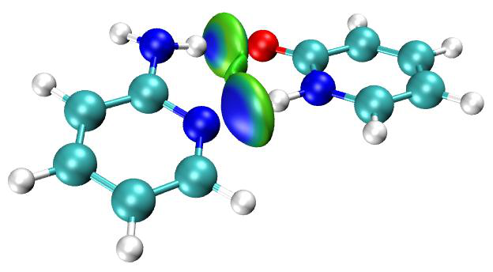
strongly suggested. The use of mIGM is essentially the same as IGM, here a simple example is given.
examples\phenylalanineresiduestrimer.xyz is optimized trimer of capped phenylalanine, we use mIGM to reveal the interactions within it. Boot up Multiwfn and load this file, then input
Multiwfn session
- 20 — Visual study of weak interaction
- -10 — mIGM analysis
- 3 — Define three fragments
- 1-29 — Atom indices in fragment 1 (the first monomer) 30-40,52,53,56,57,63-65,77-87
Multiwfn session
- All other atoms (the third monomer) 4 — Manually input grid spacing
- 0.2 — Grid spacing of 0.2 Bohr is sufficient to obtain a smooth enough image
- 3 — Output cube files to current folder Some .cub files have been generated in current folder. Move dg_inter.cub and sl2r.cub to VMD folder while delete the other .cub file. Copy the examples\IGM_inter.vmd script to VMD folder, then boot up VMD and run source IGM_inter.vmd command in VMD console window to execute the plotting script, then mIGM graph will be immediately shown in the graphical window. After that, in VMD choose “Graphics” - “Representation”, and input 0.07 in the “Isovalue” text box to change isovalue, you will see the following image, which nicely reveals all kinds of interactions (dispersion and H-bond) between the three molecules. The corresponding color scale is the same as the IGMH mentioned in Section
In the post-processing menu, you can also calculate atomic or atomic pair δg indices via corresponding option like IGM and IGMH analyses.
4.20.13 Using amIGM to reveal weak interactions in dynamic environments¶
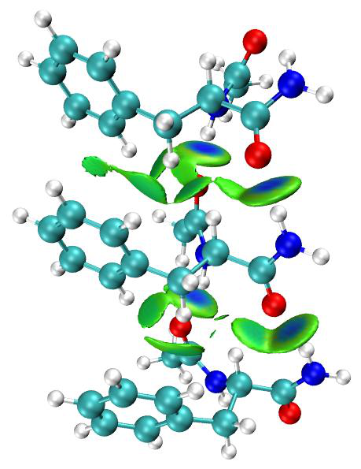
a dynamic process” (http://sobereva.com/759, in Chinese) much more comprehensively illustrates the use of the amIGM method, and introduces many key points.
amIGM has been briefly described in Sections 3.23.11 and detailedly introduced in Struct. Bond., 190, 297 (2026) DOI: 10.1007/430_2025_95. The present section illustrates how to use amIGM method to visually reveal the interactions between a phenol molecule and environment waters in a simulation box. This is an application example in the original paper of amIGM method.
Initially, one needs to run molecular dynamics (MD) simulation to obtain a trajectory file, and it must be in multiple-frame .xyz format. For example, you can load the trajectory generated by GROMACS/AMBER/NAMD/CP2K... program into VMD software, and save to a .xyz file. It is important to recognize that the region of interest should be fixed (preferably close to the center of the simulation box) via freeze or position restraint setting. In this example, the only solvate molecule, phenol, is fixed at the box center throughout the simulation, while the water molecules that fill the rest of the box can move freely. The compressed .xyz trajectory file simulated at room temperature for 1 ns can be directly downloaded at http://sobereva.com/multiwfn/extrafiles/phenol_in_water.7z. After decompressing the package, you will obtain phenol_in_water.xyz, which contains 1001 frames (the trajectory was saved every 1 ps).
Boot up Multiwfn and load the phenol_in_water.xyz, then input
Multiwfn session
- 20 — Visual study of weak interactions -12 //amIGM analysis 2 //Define two fragments for amIGM. If you define n fragments, then amIGM will reveal all interactions between the n fragments
1-13 //Atomic indices of fragment 1, corresponding to the phenol c //The rest of atoms (waters) is defined as fragment 2 1,1000 //Consider 1 to 1000 frames 11 //Because the interactions of phenol-water occur in various regions around phenol, the box containing the grids to be calculated should cover the entire phenol, we choose mode 11 to realize this aim, namely we will select a set of atoms, set extension distance around them and grid spacing
1-13 //The atoms for defining the box 3 A //Extension distance is set to 3 Å [Press ENTER button] //Grid spacing is set to the default 0.2 Bohr, which is adequate of obtaining fine enough amIGM maps
Now Multiwfn starts to calculate. The cost is linearly proportional to the number of frames to be considered, positively proportional to the number of atoms and number of grids to be calculated. On Intel i9-13980HX mobile CPU, using 16 parallel threads, the calculation totally took up 8.8 minutes. The parallel efficiency of amIGM analysis is ideal, so using server CPUs with large number of cores will greatly benefit.
Once calculation is finished, you can find many options in the post-processing menu, see
Section 3.23.11. Here we choose option 3 to export the grid data of averaged δginter as avgdg_inter.cub and averaged sign(λ2)ρ as avgsl2r.cub in current folder. Move the two .cub files to VMD folder, and copy the VMD script aIGM.vmd from “examples” folder to VMD folder. Next, boot up VMD, run command source aIGM.vmd in the console window of VMD to execute the script, then the two .cub files will be loaded, and amIGM map is immediately shown on screen, as shown below
Current map is difficult to view clearly, so we need to change plotting settings. In VMD main window, choose “Graphics” - “Representation”, input 0.003 in the “Isovalue” text box to set
isovalue of averaged \(\delta g^{inter}\) to 0.003 a.u. Then click the representation corresponding to CPK style, input fragment 0 in “Selected Atoms” text box to only make the phenol visible. Now you should see:
The color bar corresponding to this map is examples\IGMH_colorbar.png. Clearly, the map above very vividly and successfully exhibited the average interactions between the phenol and surrounding waters, demonstrating the great value of amIGM. If you further decrease the isovalue to e.g. 0.0018 a.u., additional isosurfaces will also be visible, which exhibit weaker interactions (mostly dispersion effect), see original paper of amIGM for relevant discussion and many other examples.
Studying interaction stability In the post-processing menu, choose option 8 to calculate grid data of standard deviation of
\(\delta g^{inter}\) and TFIamIGM (thermal fluctuation index of amIGM), then they are exported to stddg_inter.cub and TFI_amIGM.cub in current folder, respectively. You can map either one onto the isosurfaces of
averaged \(\delta g^{inter}\) to graphically exhibit difference in interaction stability; usually their graphical effects are similar, the larger the value at a location on the isosurface, the lower the dynamics stability of the corresponding interaction. aIGM_TFI.vmd in “examples” folder is a VMD script file used to map TFI_amIGM.cub onto isosurfaces of avgdg_inter.cub by colors. Now we move TFI_amIGM.cub and aIGM_TFI.vmd to VMD folder, then boot up VMD and run source
aIGM_TFI.vmd in console window of VMD, then change isovalue of averaged \(\delta g^{inter}\) to 0.003 a.u.,
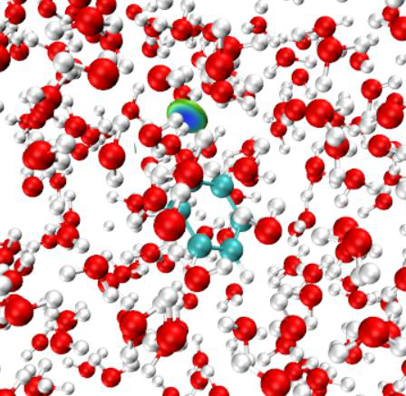
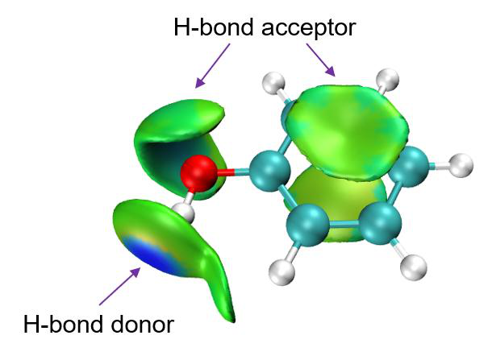
after some fine-tunes you will see the following map. The default color range of TFIamIGM in the aIGM_TFI.vmd is 0.0 to 2.0 with blue-green-red transition method, which is well-suited for the present example. We should only focus on the color of outer sides of the isosurfaces (the colors of the inner sides are not well distinguishable), by which one can see that the O-H...O H-bond regions
are relatively stable (thermal fluctuation is weak), while the π-H bond regions above and below the six-membered carbon ring are less stable (thermal fluctuation is notable).
Important notes on amIGM analysis - The system to be studied should not be too large, otherwise the cost of amIGM analysis may be prohibitively high. The current system contains 1342 atoms, which is not quite large. If your system contains huge number of atoms, you must use a smaller model instead, or truncate the present system to only keep the atoms around the region of interest (to this aim, you can use a proper “selection” when using VMD to save a new trajectory file). - The more the considered trajectory frames, the more realistic the result, and the smoother the isosurfaces. Usually at least 500 frames should be taken into account. - As mentioned earlier, the position and structure of the key object should be fixed. As you can see, in the MD simulation of the above instance, the phenol atoms were fully frozen at the initial coordinate. If the key object can freely translate or rotate, or its conformation changes a
lot during the MD simulation, the isosurfaces of \(\delta g^{inter}\) will be cluttered, making it infeasible to visually study interactions.
- To greatly reduce computational cost of amIGM and aIGM, Multiwfn employs a scheme: If a grid is within scaled vdW radius of any atom of fragment 1, then this grid will be calculated while others will be ignored to save cost. The parameter “amIGMvdwscl” in settings.ini corresponds to the scale factor, the smaller the value, the lower the cost. The default amIGMvdwscl=2 is found to be very safe. Employing this acceleration scheme clearly implies that the fragment 1 defined by the user should correspond to the key region, which is fixed during the MD simulation. The acceleration scheme can be disabled by setting “amIGMvdwscl” to 0, then the order of the defined fragments is arbitrary, for example, in the above instance, one may also define the waters as fragment 1 while the phenol as fragment 2.
- Atom names in MD simulation codes are generally different to element names. It is best to
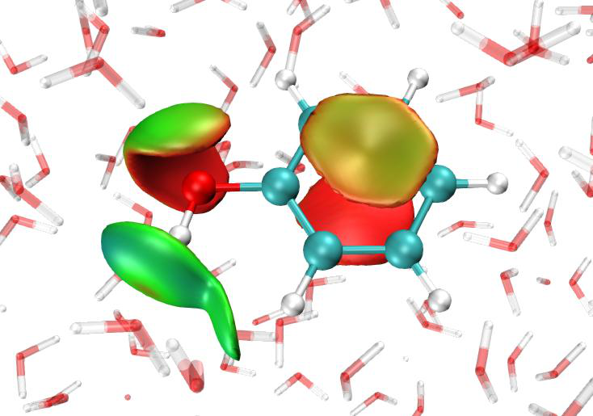